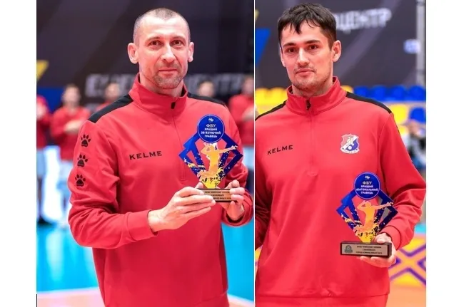

Двоє волейболістів МСК «Дніпро» серед кращих Чемпіонату України
У своєму дебютному сезоні у Чемпіонаті України з волейболу серед чоловічих команд Вищої ліги сезону 2023/2024 років черкаський МСК «Дніпро» (Черкаси) фінішував на високому третьому місці. Перше місце у ВК «Поділля» (Хмельницький), а на другому місці – «Бахмут-ШВСМ»
За підсумками сезону також було визначено кращих гравців. Приємно відзначити, що на двох позиціях не було рівних двом гравцям черкаського клубу.
Лауреати сезону у чоловічій вищій лізі:
MVP чемпіонату – Максим ТУРИК (ВК “Поділля”)
Кращий зв’язуючий – Сергій ГУМЕНЮК (МСК “Дніпро”)
Кращий діагональний – Олександр ГРЕБЕНЮК (МСК “Дніпро”)
Кращий ліберо – Микита АНГЕЛОВ (“Бахмут-ШВСМ”)
Кращий блокуючий – Павло ЯНКОВИЧ (ВК “Поділля”)
Кращий догравальник – Олег САДОВНІКОВ (“Бахмут-ШВСМ”)